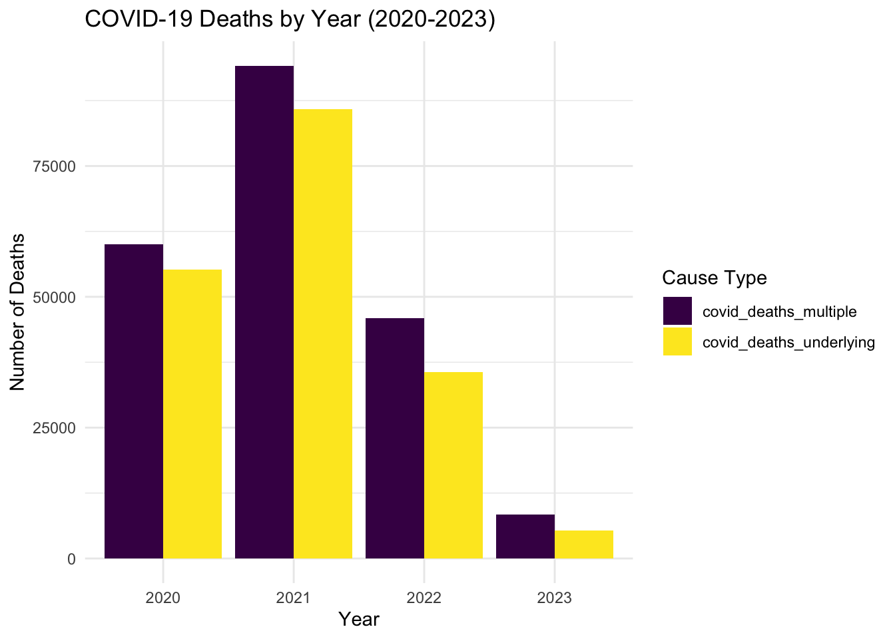

TO DO 11/20/2024: -replace suppressed counts with random numbers -how do we deal with missing values?
The original dataset (10,476 rows and 35 columns) contains weekly counts of death by cause, week and geographical location.
Date Range: Weekly data from 2020 to 2023.
Geographic Scope: Includes state-level data and “United States” as an aggregated entry.
Due to privacy protection, cells with count under 10 has been supressed and shown as blank. We will generate a random whole number between 1-10 for those cells for further analyses.
library(tidyverse)
library(lubridate)
library(viridis)
library(broom)Import data and do some inital cleaning
data = read_csv("data/weekly_deaths_by_state_and_causes.csv") %>%
rename(
`Septicemia` = `Septicemia (A40-A41)`,
`Malignant neoplasms` = `Malignant neoplasms (C00-C97)`,
`Diabetes mellitus` = `Diabetes mellitus (E10-E14)`,
`Alzheimer disease` = `Alzheimer disease (G30)`,
`Influenza and pneumonia` = `Influenza and pneumonia (J09-J18)`,
`Chronic lower respiratory diseases` = `Chronic lower respiratory diseases (J40-J47)`,
`Other respiratory diseases` = `Other diseases of respiratory system (J00-J06,J30-J39,J67,J70-J98)`,
`Kidney Disease` = `Nephritis, nephrotic syndrome and nephrosis (N00-N07,N17-N19,N25-N27)`,
`Other Symptoms` = `Symptoms, signs and abnormal clinical and laboratory findings, not elsewhere classified (R00-R99)`,
`Diseases of heart` = `Diseases of heart (I00-I09,I11,I13,I20-I51)`,
`Cerebrovascular diseases` = `Cerebrovascular diseases (I60-I69)`,
`COVID-19 (Multiple)` = `COVID-19 (U071, Multiple Cause of Death)`,
`COVID-19 (Underlying)` = `COVID-19 (U071, Underlying Cause of Death)`
) %>%
janitor::clean_names() %>%
rename(state = jurisdiction_of_occurrence) %>%
mutate(data_as_of = mdy(`data_as_of`),
year = year(week_ending_date),
month = month(week_ending_date)
) %>%
select(state, year, month, mmwr_week, all_cause: covid_19_underlying)## Warning: One or more parsing issues, call `problems()` on your data
## frame for details, e.g.:
## dat <- vroom(...)
## problems(dat)## Rows: 10476 Columns: 35
## ── Column specification ────────────────────────────────────
## Delimiter: ","
## chr (14): Data As Of, Jurisdiction of Occurrence, flag_sept, flag_diab, fla...
## dbl (17): MMWR Year, MMWR Week, All Cause, Natural Cause, Septicemia (A40-A...
## lgl (3): flag_allcause, flag_natcause, flag_neopl
## date (1): Week Ending Date
##
## ℹ Use `spec()` to retrieve the full column specification for this data.
## ℹ Specify the column types or set `show_col_types = FALSE` to quiet this message.data## # A tibble: 10,476 × 19
## state year month mmwr_week all_cause natural_cause septicemia
## <chr> <dbl> <dbl> <dbl> <dbl> <dbl> <dbl>
## 1 United States 2020 1 1 60179 55010 843
## 2 United States 2020 1 2 60735 55755 861
## 3 United States 2020 1 3 59363 54516 829
## 4 United States 2020 1 4 59162 54401 828
## 5 United States 2020 2 5 58834 54001 811
## 6 United States 2020 2 6 59491 54416 806
## 7 United States 2020 2 7 58815 53969 792
## 8 United States 2020 2 8 58912 53987 779
## 9 United States 2020 2 9 59334 54316 814
## 10 United States 2020 3 10 59716 54401 811
## # ℹ 10,466 more rows
## # ℹ 12 more variables: malignant_neoplasms <dbl>, diabetes_mellitus <dbl>,
## # alzheimer_disease <dbl>, influenza_and_pneumonia <dbl>,
## # chronic_lower_respiratory_diseases <dbl>, other_respiratory_diseases <dbl>,
## # kidney_disease <dbl>, other_symptoms <dbl>, diseases_of_heart <dbl>,
## # cerebrovascular_diseases <dbl>, covid_19_multiple <dbl>,
## # covid_19_underlying <dbl>subset_df = data %>%
filter(state %in% c( "South Dakota",
"Tennessee",
"Texas",
"Utah",
"Vermont",
"Virginia",
"Washington",
"West Virginia",
"Wisconsin",
"Wyoming"))
#inspect missing values state by state
count_na = function(df, state_name) {
out_df = df %>%
filter(state == state_name) %>%
summarize(across(everything(), ~ sum(is.na(.)))) %>%
select(-state, -year, -month, -mmwr_week) %>%
pivot_longer(
cols = everything(),
names_to = "disease",
values_to = "na"
) %>%
filter(na != 0)
return(out_df)
}
count_na(subset_df,"South Dakota")## # A tibble: 13 × 2
## disease na
## <chr> <int>
## 1 septicemia 174
## 2 malignant_neoplasms 1
## 3 diabetes_mellitus 173
## 4 alzheimer_disease 130
## 5 influenza_and_pneumonia 174
## 6 chronic_lower_respiratory_diseases 129
## 7 other_respiratory_diseases 169
## 8 kidney_disease 149
## 9 other_symptoms 102
## 10 diseases_of_heart 1
## 11 cerebrovascular_diseases 138
## 12 covid_19_multiple 90
## 13 covid_19_underlying 104count_na(subset_df,"Tennessee")## # A tibble: 4 × 2
## disease na
## <chr> <int>
## 1 other_respiratory_diseases 1
## 2 other_symptoms 6
## 3 covid_19_multiple 3
## 4 covid_19_underlying 8count_na(subset_df,"Texas")## # A tibble: 2 × 2
## disease na
## <chr> <int>
## 1 covid_19_multiple 2
## 2 covid_19_underlying 3count_na(subset_df,"Utah")## # A tibble: 10 × 2
## disease na
## <chr> <int>
## 1 septicemia 183
## 2 diabetes_mellitus 15
## 3 influenza_and_pneumonia 174
## 4 chronic_lower_respiratory_diseases 1
## 5 other_respiratory_diseases 170
## 6 kidney_disease 156
## 7 other_symptoms 175
## 8 cerebrovascular_diseases 3
## 9 covid_19_multiple 50
## 10 covid_19_underlying 66count_na(subset_df,"Vermont")## # A tibble: 11 × 2
## disease na
## <chr> <int>
## 1 septicemia 85
## 2 diabetes_mellitus 190
## 3 alzheimer_disease 177
## 4 influenza_and_pneumonia 97
## 5 chronic_lower_respiratory_diseases 172
## 6 other_respiratory_diseases 146
## 7 kidney_disease 79
## 8 other_symptoms 90
## 9 cerebrovascular_diseases 189
## 10 covid_19_multiple 120
## 11 covid_19_underlying 119count_na(subset_df,"Virginia")## # A tibble: 5 × 2
## disease na
## <chr> <int>
## 1 septicemia 3
## 2 influenza_and_pneumonia 8
## 3 other_symptoms 14
## 4 covid_19_multiple 4
## 5 covid_19_underlying 12count_na(subset_df,"Washington")## # A tibble: 7 × 2
## disease na
## <chr> <int>
## 1 septicemia 43
## 2 influenza_and_pneumonia 66
## 3 other_respiratory_diseases 10
## 4 kidney_disease 106
## 5 other_symptoms 39
## 6 covid_19_multiple 3
## 7 covid_19_underlying 10count_na(subset_df,"West Virginia")## # A tibble: 9 × 2
## disease na
## <chr> <int>
## 1 septicemia 177
## 2 diabetes_mellitus 1
## 3 alzheimer_disease 23
## 4 influenza_and_pneumonia 118
## 5 other_respiratory_diseases 183
## 6 kidney_disease 61
## 7 other_symptoms 98
## 8 covid_19_multiple 36
## 9 covid_19_underlying 43count_na(subset_df,"Wisconsin")## # A tibble: 7 × 2
## disease na
## <chr> <int>
## 1 septicemia 50
## 2 influenza_and_pneumonia 78
## 3 other_respiratory_diseases 26
## 4 kidney_disease 5
## 5 other_symptoms 134
## 6 covid_19_multiple 14
## 7 covid_19_underlying 27count_na(subset_df,"Wyoming")## # A tibble: 13 × 2
## disease na
## <chr> <int>
## 1 septicemia 115
## 2 malignant_neoplasms 3
## 3 diabetes_mellitus 181
## 4 alzheimer_disease 189
## 5 influenza_and_pneumonia 148
## 6 chronic_lower_respiratory_diseases 163
## 7 other_respiratory_diseases 156
## 8 kidney_disease 134
## 9 other_symptoms 114
## 10 diseases_of_heart 1
## 11 cerebrovascular_diseases 190
## 12 covid_19_multiple 114
## 13 covid_19_underlying 107# significant missing was found in: South Dakota, Utah, Vermont, West Virginia, and Wyoming -how many people die each year from 2020-2023 (what’s the proportion of natural and non-natural causes?) -and, what’s the mortality rate of the general population?
-which disease among the listed creates the most health burdens, that is, gives rise to the most deaths?
How many people died from covid in 2020, 2021, 2022, and 2023?
# Summarize COVID-19 deaths by year (both multiple and underlying cause)
covid_deaths_by_year = subset_df %>%
group_by(year) %>%
summarise(
covid_deaths_multiple = sum(covid_19_multiple, na.rm = TRUE),
covid_deaths_underlying = sum(covid_19_underlying, na.rm = TRUE)
) %>%
filter(year %in% c(2020, 2021, 2022, 2023))
# Reshape the data for easier plotting
covid_deaths_long = covid_deaths_by_year %>%
pivot_longer(cols = c(covid_deaths_multiple, covid_deaths_underlying),
names_to = "cause_type", values_to = "deaths")
# Create the bar plot
ggplot(covid_deaths_long, aes(x = factor(year), y = deaths, fill = cause_type)) +
geom_bar(stat = "identity", position = "dodge") +
labs(title = "COVID-19 Deaths by Year (2020-2023)",
x = "Year", y = "Number of Deaths", fill = "Cause Type") +
scale_fill_viridis(discrete = TRUE) +
theme_minimal()
Which months have the highest mortality?
How is deaths from specific diseases distribute across months? (which season will exacerbate what diseases?)
How often was COVID-19 the primary versus a secondary contributor to mortality?
Does COVID exacerbate other diseases?
Does specific conditions/diseases exacerbate covid?
Is there any correlation between cardiovascular and respiratory diseases?
Did the pandemic period affect mortality rates of non-COVID causes like heart disease or diabetes?
Which states had higher mortality rates from specific causes, such as COVID-19 or heart disease, and did these vary over time?